Release 0.12.1 · Planning, 4D simulation, dashboards and reports
Written in ASD-STE100 Simplified Technical English. Stratum 4D by Miqyas Labs · developed by Junaid Quamar · linkedin.com/in/junaidquamar November 2026. The sample projects in this manual are fictional.
Contents
1Introduction
2Installation
3First start
4Projects and files
5The P6 layout
6The Project layout
7The 4D layout
8Dashboards and reports
9AI assistants (MCP)
10Stratum Server: users, security and AiSOC
11Troubleshooting, shortcuts and glossary
1Introduction
This chapter tells you what Stratum 4D does, which layouts it has, and how to use this manual.
What Stratum 4D is
Stratum 4D is a planning and 4D simulation tool for construction projects. It reads a schedule from Primavera P6 or Microsoft Project. It can also read a 3D building model in the IFC format.
You link the model elements to the activities of the schedule. Stratum then shows the construction sequence in 3D, day by day. You can calculate the schedule, record progress, compare against a baseline and make reports.
Figure 1-1. The six stages of work in Stratum 4D.
The three layouts
Stratum 4D has three layouts. All three layouts use the same calculation engine and the same project data. When you change the layout, the open project stays open.
The P6 layout looks and works like Primavera P6 Professional.
The Project layout looks and works like Microsoft Project.
The 4D layout shows the 3D model, the Gantt chart and the playback timeline together.
Figure 1-2. The three layouts and what each layout is for.
To change the layout
On the top bar, click P6, Project or 4D.The new layout opens with the same project.
Alternatively, push Ctrl+Alt+1, 2 or 3.
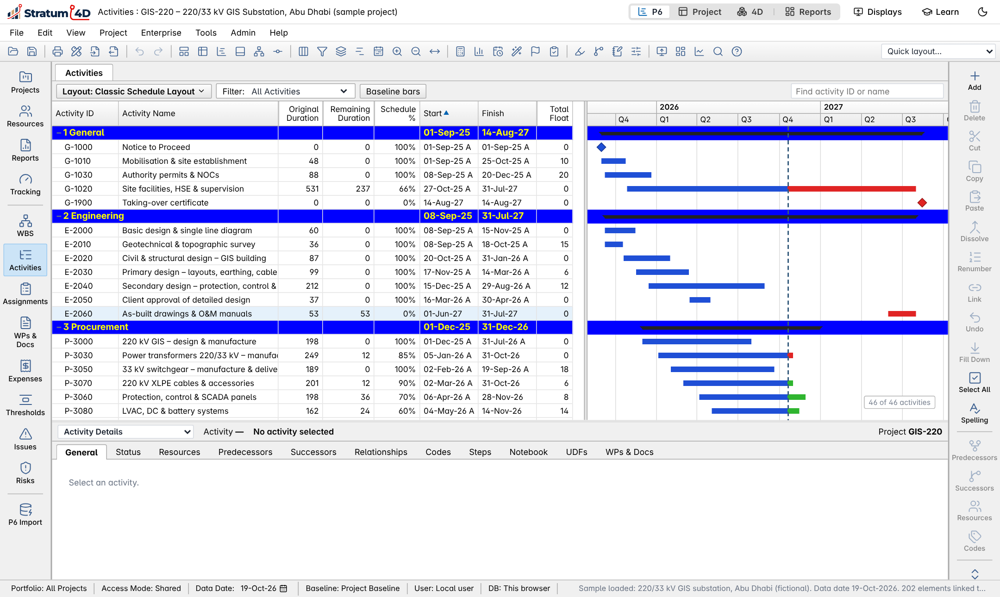
Figure 1-3. The P6 layout with the 220 kV GIS substation sample project.
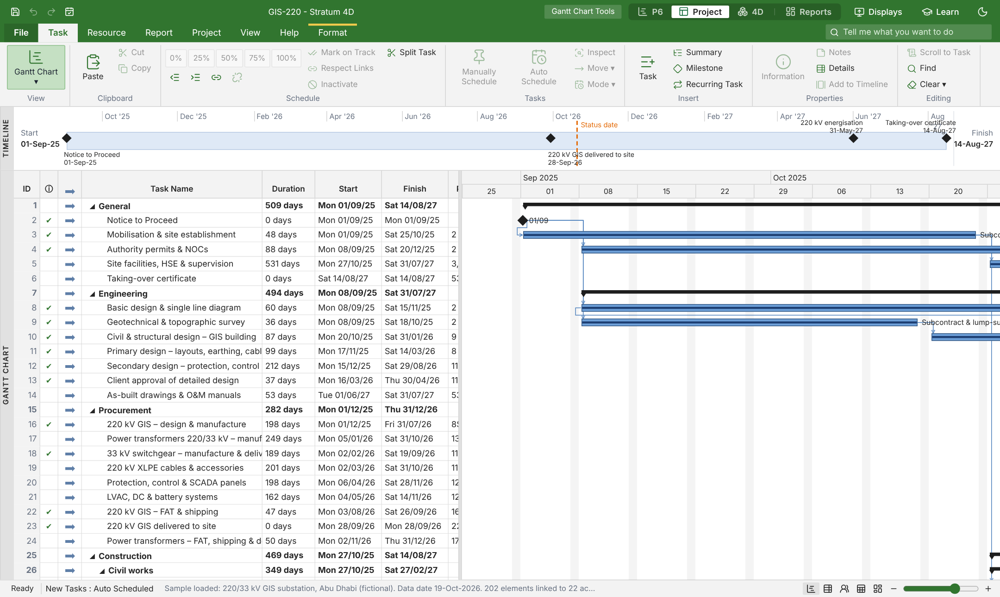
Figure 1-4. The Project layout (Microsoft Project style) with the same project.Figure 1-5. The 4D layout: Gantt chart on the left, 3D model in the middle, link tools on the right and the timeline at the bottom.
The sample projects
Stratum 4D has two sample projects. You can use them to learn the software without your own files. The two sample projects are fictional.
Sample project
Contents
220 kV GIS substation (UAE)
46 activities on a UAE 6-day calendar, costs in AED, resources, a baseline and a 3D model with 202 elements.
Small RC building
A small concrete building with 14 activities and a 3D model. Use it for a fast first test.
This manual uses the 220 kV GIS substation project for most examples.
How to use this manual
This manual is written in ASD-STE100 Simplified Technical English. Each chapter starts with its purpose. Then it gives a description and the procedures.
A procedure is a numbered list of steps. Do the steps in the given order.
A line that starts with "Result" tells you what you see after the step.
Names of buttons, menus and fields are in bold blue.
Keys are shown as Ctrl+S. Push the keys at the same time.
A NOTE gives information that helps you.
A CAUTION tells you about a risk of loss of data.
The words in the layouts
Each layout uses the words of the software that it copies. The table gives the words for the same item in each layout.
Item
P6 layout
Project layout
4D layout
One item of work
Activity
Task
Task
Its identifier
Activity ID
ID (row number)
Task ID
Date of the last progress update
Data date
Status date
Data date
Calculate the dates
Schedule (F9)
Calculate Project (F9)
Reschedule (F9)
Time that work can slip
Total float
Total slack
TF
Group of work
WBS
Summary task
WBS
Related chapters: 2 Installation, 3 First start, 4 Projects and files.
2Installation
This chapter tells you how to install Stratum 4D on Windows, macOS, Linux and Android, and how to use it in a web browser.
Versions of Stratum 4D
Stratum 4D is available as a desktop application, an Android application and a web application. All versions have the same layouts and the same calculations.
The desktop application can connect to Primavera P6 and can send reports by email. The web application and the Android application cannot connect to P6.
Figure 2-1. Select the correct file for your device.
Get the installation files
The installation files are on the releases page of Stratum 4D on GitHub. Each release has one file for each type of device.
Open the releases page: github.com/xunaidlnt-sudo/stratum-4d/releases.
Find the latest release at the top of the page.
Under Assets, click the file for your device.The file goes into the Downloads folder.
Install on Windows
Use the file that ends with -win-x64.exe. Windows 10 and Windows 11 (64-bit) are supported.
The installer does not have a code signature yet. Thus Windows SmartScreen can show the message "Windows protected your PC".
Double-click the file Stratum-4D-<version>-win-x64.exe.
If SmartScreen shows a message, click More info.
Click Run anyway.
Select the folder for the installation, or keep the default folder.
Click Install.The installer adds Stratum 4D to the Start menu and to the desktop.
Click Finish.Stratum 4D starts.
After the installation, Windows opens .xer and .ifc files in Stratum 4D when you double-click them.
Install on macOS
There are two files for macOS. Use -mac-arm64.dmg on a Mac with Apple silicon (M1 or later). Use -mac-x64.dmg on a Mac with an Intel processor.
Double-click the .dmg file.A window opens with the Stratum 4D icon.
Drag the Stratum 4D icon to the Applications folder.
Open the Applications folder.
Right-click Stratum 4D and click Open.
In the message, click Open again.Stratum 4D starts. Next time, you can open it as usual.
Install on Linux
There are two files for Linux. The .AppImage file operates on most distributions. The .deb file is for Debian and Ubuntu.
To use the AppImage file
Open a terminal in the Downloads folder.
Type chmod +x Stratum-4D-*.AppImage and push Enter.
Double-click the AppImage file.Stratum 4D starts.
To install the .deb file
Open a terminal in the Downloads folder.
Type sudo apt install ./Stratum-4D-*.deb and push Enter.
Start Stratum 4D from the applications menu.
Install on Android
Use the file that ends with -android.apk. The application is for phones and tablets with Android 8 or later.
On the phone or tablet, open the releases page and download the .apk file.
Open the file from the download notification.
If Android asks for permission to install from this source, give the permission.
Tap Install.
Tap Open.Stratum 4D starts.
To share a cloud folder (Google Drive or OneDrive) with a team on a tablet, use the web application. Chapter 4 tells you about shared folders.
Use the web application
The web application operates in Chrome, Edge, Firefox and Safari. It is not necessary to install it. The web application keeps your projects in the storage of the browser on that computer.
Open the address of the web application that you got from Miqyas Labs.
Type your user name and password.
Click Sign in.Stratum 4D opens. At the first start, the setup steps of chapter 3 open.
To install the web application as an application
Open the web application in Chrome or Edge.
In the address bar, click the install icon.
Click Install.Stratum 4D opens in its own window, with an icon on the desktop.
If you clear the data of the browser, the projects in the browser storage are deleted. Save a project file or use a shared folder to keep a copy (chapter 4).
Update to a new release
To update the desktop application, install the new release over the old release. Your projects and settings stay. The web application updates when you open it again.
Remove Stratum 4D
Windows: open Settings › Apps, select Stratum 4D and click Uninstall.
macOS: drag Stratum 4D from the Applications folder to the Bin.
Linux: delete the AppImage file, or type sudo apt remove stratum-4d.
Android: touch and hold the icon, then tap Uninstall.
The projects in the database stay on the computer after you remove the application. Delete them only if you have a copy.
Related chapters: 3 First start, 4 Projects and files.
3First start
This chapter tells you what to do when you start Stratum 4D for the first time.
The setup steps
At the first start, Stratum 4D asks two questions: which layout you want, and where to keep the projects. You can change both answers later in Settings.
Figure 3-1. The steps at the first start.
Select the layout
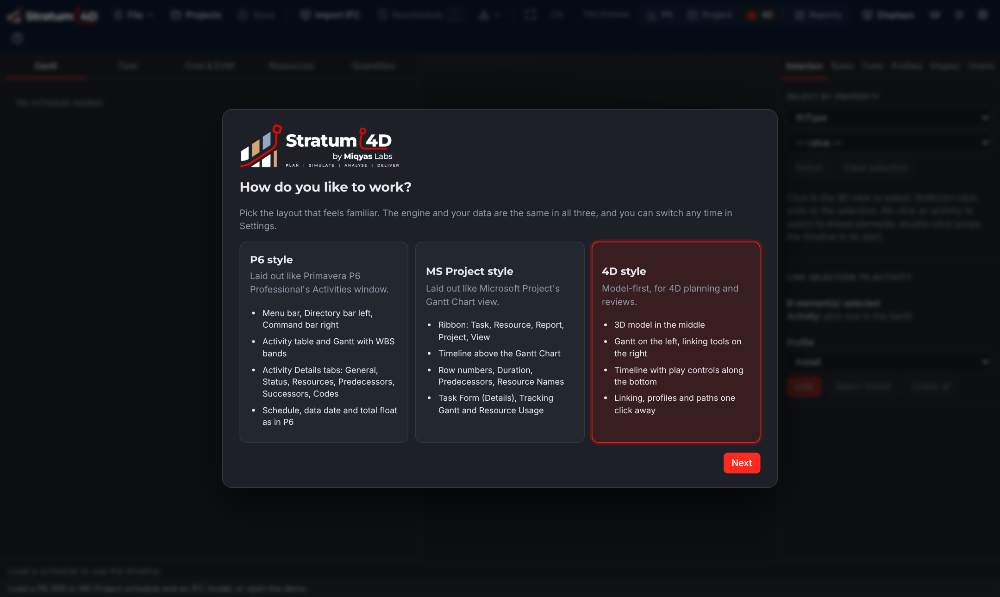
Figure 3-2. Select the layout that you know best.
Click P6 style, MS Project style or 4D style.
Click Next.
If you work with Primavera P6 every day, select P6 style. If you make 4D simulations, select 4D style.
Select the storage
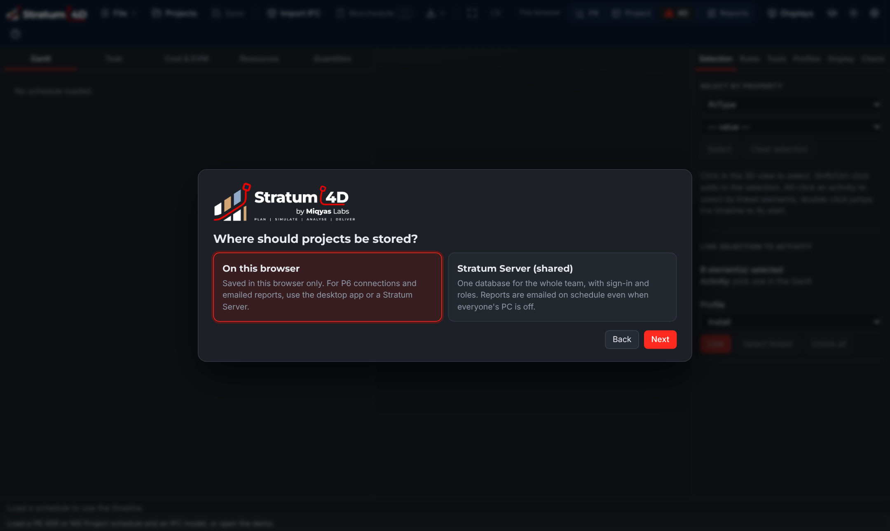
Figure 3-3. Select where Stratum 4D keeps the projects.
Storage
Use it when
On this computer (desktop) or On this browser (web)
You work alone. The projects stay on this computer.
Stratum Server (shared)
Your team has a Stratum Server. All users work on the same projects, with sign-in and roles.
To keep the projects on this computer
Click On this computer (or On this browser).
Click Next.
To connect to a Stratum Server
Click Stratum Server (shared).
Type the address of the server that you got from your administrator.
Click Check.Stratum 4D finds the server.
If the server is new, type a name, an email address and a password for the first administrator. Then click Create admin and connect.
If the server has users, type your email address and password. Then click Sign in.The step Ready opens.
Optional connections
The last step, Ready, lets you connect to Primavera P6 and set up email for reports. These two buttons show only in the desktop application and with a Stratum Server. You can skip this step. Chapter 4 and the chapter about P6 connections tell you how to do this later.
To connect to P6 now, click Connect to P6….
To set up email now, click Set up email….
To skip, click Start.The workspace opens.
The empty workspace
When no project is open, the workspace shows a short message. From it, you can open a sample project or start the training.
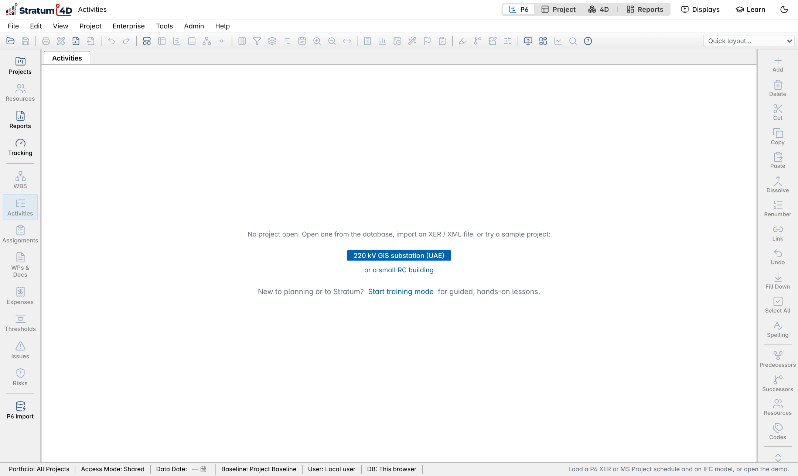
Figure 3-4. The empty workspace in the P6 layout.
To open a sample project
Click 220 kV GIS substation (UAE).The sample project opens in the layout that you selected.
To start the training
Click Start training mode, or click Learn on the top bar.
Select a lesson or a course.The lesson shows you each step in the software.
Change the settings later
On the top bar, click the gear icon (Settings).
Select a tab: Interface, Data & sign-in, Primavera P6, Email or Users.
Make the changes. If the tab has a Save button, click it.
Click the X at the top right to close Settings.
Use the moon icon on the top bar to change between the light theme and the dark theme.
Related chapters: 2 Installation, 4 Projects and files.
4Projects and files
This chapter tells you how to open, import, save and export projects, and where Stratum 4D keeps them.
Projects and files
In this manual, a project is a schedule that Stratum 4D keeps in its database. A file is a file on the disk, for example an XER file from P6.
You import a file to make a project. You export a project to make a file. The project database keeps each saved version of a project.
Figure 4-1. Files into and out of Stratum 4D, and the four places for the project database.
Where Stratum 4D keeps the projects
Storage
Where
Who can open the projects
Desktop application
A SQLite file in your user folder
You, on this computer
Web application
The storage of the browser
You, in this browser on this computer
Cloud folder
A Google Drive or OneDrive folder
All persons with edit access to the folder
Stratum Server
A PostgreSQL database
All users of the server, by their role
Each save gets a version number. If a different person saved the project after you opened it, Stratum 4D does not save over that version. It gives you the option Save as new.
Import a schedule file
Stratum 4D can import these schedule files:
Primavera P6 XER files (.xer), with activities, WBS, logic, codes, user fields, calendars, resources, costs and baselines.
Microsoft Project XML files (.xml). In Microsoft Project, use File › Save As › XML Format to make this file.
Microsoft Excel files (.xlsx) that you exported from Stratum 4D and changed.
Stratum 4D cannot open Microsoft Project .mpp files. Save the file as XML in Microsoft Project first.
To import a schedule in the P6 layout
Click File › Import….
Select the .xer or .xml file.
Click Open.The schedule opens as a new project.
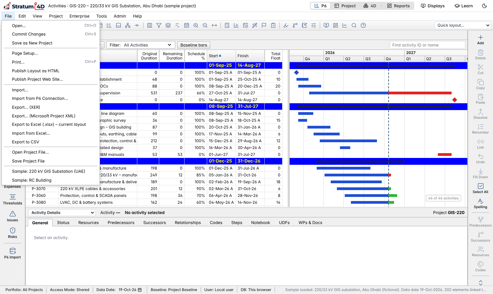
Figure 4-2. The File menu of the P6 layout, with Import and Export.
To import a schedule in the Project layout
Click File.
Click Open.
Click Import XER / Microsoft Project XML.
Select the file and click Open.
To import a new version of the same schedule
Each week, you can import the new XER over the open project. Stratum 4D keeps the model links because it finds each activity by its Activity ID. If you click Cancel at step 3, the file opens as a new project.
Open the project.
Import the new XER file as usual.
Stratum 4D asks "Update the open schedule with this file?". Click OK.The Check tab lists the changes: finish slip, new and deleted activities, and changes of status.
Open and save a project
To open a project from the database
Click Projects (P6 and 4D layouts), or File › Open › Projects (Project layout).
Select the project.
Click Open.
To save a project
Push Ctrl+S, or click Save.Stratum 4D saves a new version of the project in the database.
Stratum 4D also saves your work in the background every few seconds. If the application closes without a save, it asks you to restore the work at the next start.
Export a project
Export
Use it for
P6 XER
Import into Primavera P6. Use Update Existing Project in P6 to bring the dates back.
Microsoft Project XML
Open in Microsoft Project 2010 or later.
Excel (.xlsx) or CSV
Change data in Excel, or make your own reports.
Stratum project file (.stratum.json)
Move a project, with its model links, to a different computer.
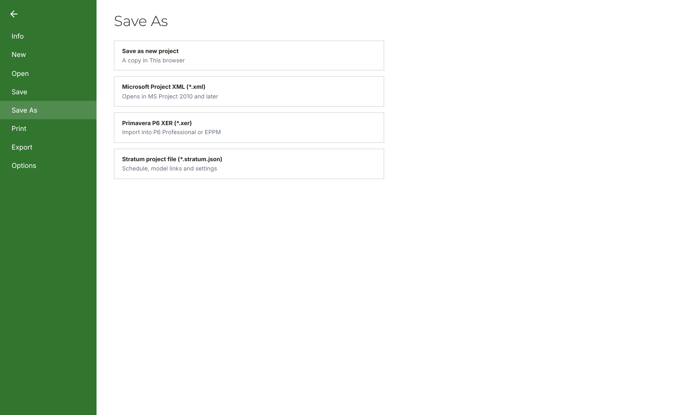
Figure 4-3. File › Save As in the Project layout.
To export a project
In the P6 layout, click File › Export…. In the Project layout, click File › Save As.
Click the type of file.The file goes into the Downloads folder.
Before you import an exported XER into P6, make a backup of the P6 project. An import with Update Existing Project changes the project in P6.
Share projects with a cloud folder
A team can use one Google Drive or OneDrive folder as a shared database. All persons with edit access to the folder work on the same projects. Stratum 4D does a check before each save, so no person saves over newer work.
Click the gear icon (Settings).
Click the Data & sign-in tab.
Under Cloud folder, click Google Drive or OneDrive.
Sign in to the account.A list of your folders opens.
Open the folder that your team shares.
Click Use "<folder>" as the Stratum folder.The projects in the folder show in Projects.
Your administrator must first register Stratum 4D with Google or Microsoft. The file docs/CLOUD_STORAGE.md tells the administrator how to do this.
Related chapters: 3 First start. Later chapters: the P6 layout, the Project layout and the 4D layout.
5The P6 layout
This chapter tells you how to use the P6 layout to plan, schedule, update and check a project.
Parts of the P6 layout
The P6 layout has the same parts as Primavera P6 Professional. If you know P6, you can use this layout immediately.
Part
Where
Use
Menu bar
Top
File, Edit, View, Project, Enterprise, Tools and Help menus
Window tabs
Below the toolbar
Projects, WBS, Activities, Assignments, Resources, Tracking and more
Activity table
Upper left
One row for each activity, with the columns of the layout
In the activity table, select a row in the applicable WBS.
Push Ins, or click Edit › Add.A new activity row shows below the selected row.
Type the Activity Name.
Type the Original Duration in days.
To link activities
Select the activities in the sequence of the work. Hold Ctrl to select more than one.
Push Ctrl+L, or click Edit › Link Activities.Each activity becomes the predecessor of the next activity, with a Finish to Start relationship.
To set a different relationship type (FS, SS, FF or SF) or a lag, open the Predecessors tab in the bottom pane. Then change the type or the lag of the relationship.
To assign resources
Select the activity.
Click Edit › Assign Resources….
In the row of the resource, click Assign.The resource is assigned to all the selected activities.
Click Close.
In the Resources tab, type the Budgeted Units for each resource.
Schedule the project
The scheduler calculates the early and late dates and the total float of each activity. It uses the logic, the durations, the calendars and the constraints. It starts at the data date.
To schedule the project
Push F9, or click Project › Schedule….The Schedule dialog opens.
Make sure that Current Data Date is correct.
Click Schedule.The dates and the float change. The critical activities show in red.
To see the result of the calculation, click View Log.
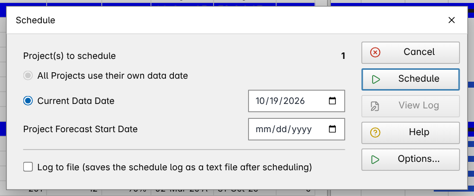
Figure 5-2. The Schedule dialog.
To change the rules of the calculation, click Options… in the Schedule dialog. For example, you can set retained logic or progress override, and the definition of a critical activity.
Stratum 4D uses the same calculation rules as P6. If you import an XER file and schedule it with the same options, the dates are the same as in P6. If a date is different, look at the schedule log first.
Set and compare baselines
A baseline is a copy of the project at one time. You compare the current schedule with the baseline to see the slip.
To make a baseline
Click Project › Maintain Baselines….
Click Add.A copy of the current project becomes a new baseline.
Type a name for the baseline.
To compare the project with this baseline, click Assign as Project Baseline.
Click Close.
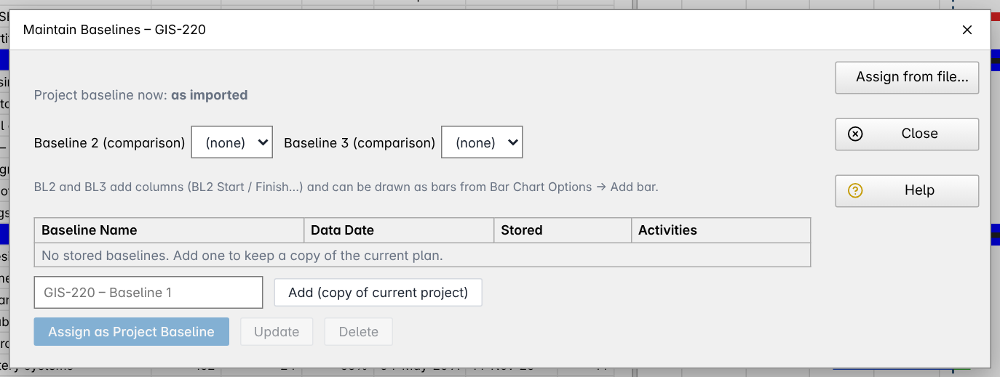
Figure 5-3. The Maintain Baselines dialog.
To see the baseline bars on the Gantt chart, click View › Show Baseline Bars. To use a baseline from a different file, click Assign from file… and select the XER or XML file.
Update the progress
Each update period, you record the actual progress. Then you move the data date and schedule again. Figure 5-4 shows the cycle.
Figure 5-4. The update cycle.
To record the progress of an activity
Select the activity.
In the bottom pane, click the Status tab.
Set Status to In progress or Complete.
Type the Actual start date. For a complete activity, also type the Actual finish date.
For an activity in progress, type the % complete and the Remaining (days).
To update all the activities as planned
Use this procedure if the work went as planned. It sets the actual dates and the progress from the planned dates.
Click Tools › Update Progress….
Type the New data date.
Select All activities, or Selected activities only.
Click Apply.
Push F9 to schedule the project.
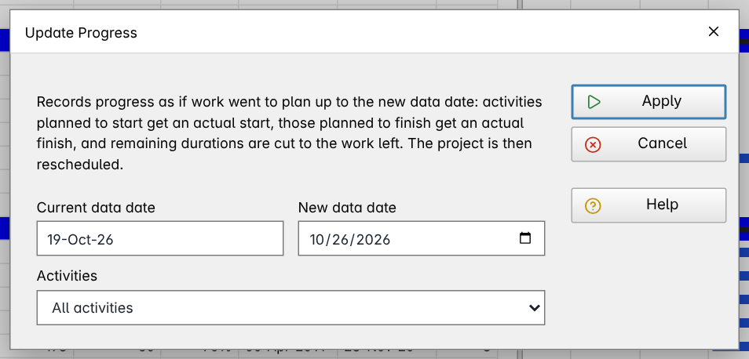
Figure 5-5. The Update Progress dialog.
Update Progress changes the actual dates of many activities. Do a check of the result before you send the schedule to other persons. To go back, push Ctrl+Z.
Check the schedule
To do a quality check
Click Project › Check Schedule….The dialog shows each check with the number of activities that do not pass.
Click a check to see its activities.
Correct the activities. Then do the check again.
The checks include missing predecessors and successors, hard constraints, negative float, high float, long durations, leads and lags.
To compare two schedules
Click Tools › Claim Digger (compare schedules)….
Open the project of this update. Stratum 4D uses it as the Current schedule.
For the Base schedule, select a stored baseline. Or click Choose… and select the file of the last update.The report lists the changed, added and deleted activities, and the changed relationships.
To keep the report, click the download button.
Change the view
To change
Click
The columns
View › Columns…
The visible activities
View › Filters…
The bands and the order
View › Group and Sort…
The bars
View › Bar Chart Options…
The timescale
View › Timescale…
All of the above, as a set
View › Layout › Save As… and Open…
To change many activities at the same time, use Tools › Global Change…. Make a filter first, so that the change applies only to the correct activities.
Send the result
If you imported the project from a P6 connection, click Project › Send Progress to P6 to send the progress directly. On a Stratum Server, an administrator can approve this update first (Chapter 10).
To send the schedule back to P6 as a file, click File › Export… (XER). To send it to Microsoft Project, click File › Export… (Microsoft Project XML). To print, push Ctrl+P. Chapter 4 gives the procedures.
Related: Chapter 4 (Projects and files), Chapter 6 (The Project layout), Chapter 7 (The 4D layout), Chapter 10 (approval of updates to P6).
6The Project layout
This chapter tells you how to use the Project layout. This layout has the same parts as Microsoft Project.
Parts of the Project layout
Part
Where
Use
File tab
Top left
Open, save, import, export and print (the Backstage view)
Ribbon
Top
Task, Resource, Report, Project, View and Format tabs
Timeline
Below the ribbon
A summary of the project dates
Task sheet
Left
One row for each task
Gantt chart
Right
One bar for each task
Status bar
Bottom
The mode for new tasks, and the view buttons
Figure 6-1. The Project layout.
Make the tasks
To add a task
Click the first empty row of the task sheet.
Type the Task Name and push Enter.
Type the Duration, for example 5d or 2w.
To make a milestone, click Task › Milestone, or type a duration of 0d.
To make a summary task
Select the tasks below the summary row.
Push Alt+Shift+→, or click the indent button on the Task tab.The row above becomes a summary task. Its bar starts at the first task and ends at the last task.
To link tasks
Select the tasks in the sequence of the work.
Push Ctrl+F2, or click the link button on the Task tab.Each task becomes the predecessor of the next task (Finish-to-Start).
You can also type the predecessors in the Predecessors column, for example 4FS+2d.
Auto scheduled and manually scheduled tasks
An auto scheduled task gets its dates from the logic and the calendar. A manually scheduled task keeps the dates that you type. The scheduler does not move it.
To change the mode, select the tasks and click Task › Auto Schedule or Task › Manually Schedule. The mode for new tasks shows on the status bar.
The P6 layout and the 4D layout show a manually scheduled task as an activity with fixed dates. If you export the project to XER, P6 schedules the task as usual.
Task information
Double-click a task, or push Shift+F2, to open the Task Information dialog. The dialog has these tabs: General, Predecessors, Resources, Advanced, Notes and Custom Fields.
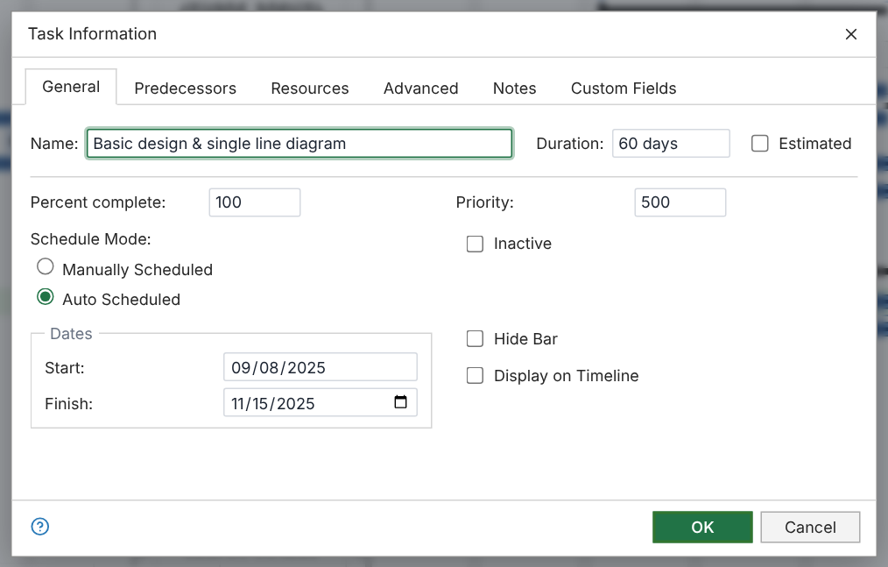
Figure 6-2. The Task Information dialog.
On the Advanced tab, you set the Deadline, the Constraint type, the Task type and Effort driven.
Work, duration and units
When you assign a resource to a task, the Project layout uses this rule: Work = Duration × Units. The task type tells which value stays the same when you change a different value. Figure 6-3 shows the three task types.
Figure 6-3. Work, duration and units for each task type.
To assign a resource
Select the task.
Click Resource › Assign Resources.
Select the resource and type the units, for example 200% for two persons.
Click Assign, then Close.
To see the work of each resource for each day, click View › Task Usage or View › Resource Usage. To see the resources as rows with their tasks, click View › Team Planner.
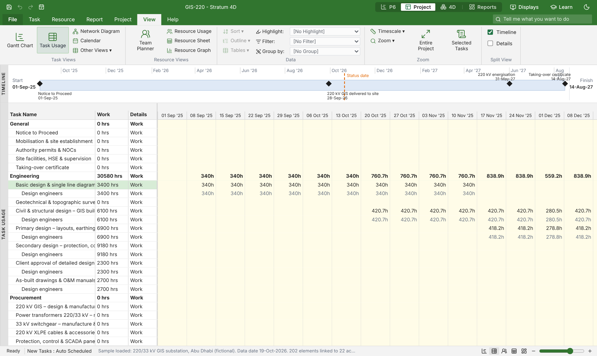
Figure 6-4. The Task Usage view, with the work for each day.
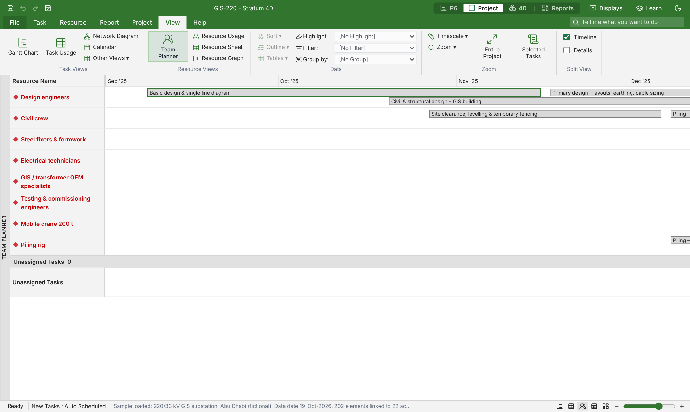
Figure 6-5. The Team Planner view.
A resource that has too much work shows in red. To find it, click Resource › Next Overallocation. To solve it, click Resource › Level All. To remove the result of the levelling, click Resource › Clear Leveling.
Calendars
To change the work hours and the holidays
Click Project › Change Working Time.
Select the calendar.
To add a holiday, type a Name, a Start and a Finish on the Exceptions tab.
To change the work week, use the Work Weeks tab.
Click OK.
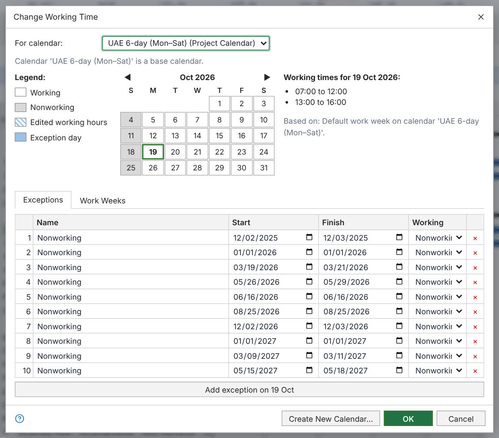
Figure 6-6. The Change Working Time dialog.
Split tasks and repeated tasks
To stop a task and start it again later, click Task › Split Task. Then click in the bar at the point of the stop. The task gets a gap of one day at that point. Drag the second part of the bar to the new start date.
To add a task that occurs at regular intervals, for example a weekly progress review, click Task › Recurring Task. Type the pattern and the number of occurrences.
Baseline and progress
To set the baseline
Click Project › Set Baseline.
Select Entire Project or Selected Tasks.
Click OK.
To update the project to a status date
Click Project › Update Project.
Select Update work as complete through and type the date.
Click OK.The tasks before the date show as complete. The tasks that cross the date show as in progress.
To record the progress of one task, select the task and click Task › Mark on Track, or type the % Complete in the task sheet.
Save for Microsoft Project
To make a file for Microsoft Project, click File › Save As and select Save as MS Project XML. Microsoft Project opens this file directly.
Figure 6-7. Save As in the File tab.
The XML file keeps the tasks, the summary tasks, the logic, the calendars, the resources, the assignments, the baseline and the custom fields.
Related: Chapter 4 (Projects and files), Chapter 5 (The P6 layout).
7The 4D layout
This chapter tells you how to link a 3D model to a schedule, and how to play, check and show the 4D simulation.
What a 4D simulation is
A 4D simulation shows the 3D model on the dates of the schedule. Each element of the model shows when its activity starts, and becomes complete when its activity finishes. You can see the sequence of the work before the work starts on site.
Figure 7-1 shows the five steps to make a 4D simulation.
Figure 7-1. The steps to make a 4D simulation.
Parts of the 4D layout
Part
Where
Use
3D view
Center
The model on the playback date
Side panel
Right
Selection, Rules, Tools, Profiles, Display and Check tabs
Gantt chart
Bottom
The activities, with a line on the playback date
Playback bar
Below the 3D view
Play, pause, speed, and the buttons to go back or forward
Figure 7-2. The 4D layout.
Load the schedule and the model
Import the schedule (XER or XML). Chapter 4 gives the procedure.
Click Import model on the toolbar, or Import 3D model… in the side panel.
Select the model file and click Open.The model shows in the 3D view. Large models can take some minutes.
Format
What Stratum 4D reads
IFC (.ifc, IFC2x3 and IFC4)
Each building element, with its properties, quantities and storey
glTF (.glb, .gltf)
Each mesh, with its name, its parent node and its custom properties ("extras")
OBJ, STL, FBX
Each mesh, with its name. FBX also gives its custom properties.
If the custom properties of a mesh have an identifier (for example GlobalId), Stratum 4D uses it. Then the links stay when you export the model again. A .gltf file must hold its data in the file. If it does not, export a .glb file.
If a model is very large, Stratum 4D thinks that it is in millimeters or centimeters. It then changes the scale to meters and tells you in the status bar.
To try the 4D layout without your own files, open File and select Sample: 220 kV GIS substation (UAE).
Link the model to the schedule
Each link connects one element of the model to one activity. There are two methods: rules and manual links.
To link with rules
A rule compares a property of the element with a field of the activity. For example, the rule can link each element where the property Zone is the same as the activity code Zone.
In the side panel, click the Rules tab.
Click Auto-detect. Stratum 4D finds the properties that agree with the activity data and proposes rules.
Examine the proposed rules. To make a different rule, click New rule.
Click Run all rules.Stratum 4D makes the links and shows the number of linked elements.
To link the selected elements to an activity
In the side panel, click the Selection tab.
Select the elements in the 3D view, or use Select by property.
Select the activity in the Gantt chart.
Under Link selection to activity, click Link.
To link with the keyboard
Select the elements in the 3D view.
Select the activity in the Gantt chart.
Push Ctrl+Shift+A.Stratum 4D links the elements to the activity. It uses the profile that you selected last on the Selection tab.
Stratum 4D keeps the links when you import a new update of the schedule. It finds each activity by its Activity ID.
Split an element into parts
A model element can be larger than one unit of work. For example, one slab can have three pours, and one wall can have bays and lifts. You can split the element in Stratum 4D. You do not have to change the model. Each part then links to its own activity.
Select the element in the 3D view.
In the side panel, click the Tools tab.
Under Split into pours / bays, select the Split type:
Equal parts along one axis: select the axis and type the number of parts.
At positions along one axis (uneven): select the axis and type the cut positions in percent, for example 30, 60.
Grid: columns × rows × layers: type the number of columns (X), rows (Z) and layers (height).
Type a name for the parts, for example Pour.
Click Split selection.The parts replace the element. The links of the element go to each part.
To put the element back as one part, select a part and click Unsplit. A growth profile, for example Bottom up, grows each part in its own space.
Appearance profiles
An appearance profile tells how an element looks before, during and after its activity. Stratum 4D has these standard profiles:
Profile
Before the activity
During the activity
After the activity
Install
Not visible
Shows in the color of the work, and grows
Shows in its own color
Remove
Shows in its own color
Shows in the color of the work
Not visible
Temporary
Not visible
Visible, for example scaffolding
Not visible
To change a profile, or to make a new profile, click the Profiles tab. Under Appearance profiles, you can set the colour, the transparency and the growth direction for each phase. For example, set the growth to Bottom up for a wall, or West → east for a slab.
Play the simulation
In the playback bar, click the play button, or push Space.The playback date moves forward. The model, the Gantt chart and the date change together.
To change the speed, use Speed.
To go to one date, drag the line in the Gantt chart, or use the back and forward buttons.
On the Display tab, under Dates to simulate, select Current schedule (actuals + forecast) or Baseline (P6 target dates). Play the two to compare the plan with the forecast. Under Colour by, select one of these modes:
Mode
Colors
Appearance profile
The colors of the profiles
Activity status vs baseline
Not started, in progress, critical, late and complete
Planned vs actual (ahead / behind)
Green if the work is ahead of the baseline, blue if it is on plan, red if it is behind. An element that the baseline has built, but the current schedule has not, shows in red.
Check the links
Do a check of the links before you show the simulation to other persons.
On the Display tab, Unlinked elements shows the elements that have no activity.
On the Check tab, you see the activities that have no elements, and Broken links. A broken link is a link to an activity or an element that is not in the project now.
To remove all the links and start again, click Clear all links on the Check tab.
Clear all links removes the manual links too. Rules can make the rule links again, but not the manual links.
Look at the model
The toolbar at the top right of the 3D view has these buttons:
Button
Use
Zoom All
Show the full model from the current direction
View…
Look from a standard direction: isometric, top, front, back, left or right
Sections
Cut the model with section planes or a section box
Viewpoints
Save and show viewpoints
Animation
Open the animation editor
If the 3D view is narrow, the buttons show only their icons. Put the pointer on a button to see its name.
Section planes and the section box
A section plane cuts the model and removes one side. Use it to see inside a building, or under the ground. The section box keeps only the part of the model that is inside the box.
To add a section plane
Click Sections.
Click + X, + Height or + Z.A plane cuts the model across that direction.
Move the slider to set the position of the plane.
To keep the other side, click ⇄.
You can add more than one plane. To stop a plane for a short time, clear its check box. To remove it, click ×.
Figure 7-3. A height plane cuts the roof off the GIS hall. The legend shows at the bottom left.
To use the section box
Click Sections.
Select Section box.Two sliders show for each direction, for the two sides of the box. A red line shows the box.
To put the box around the selected elements, click Fit to selection.
Move the sliders to change the box.
Select Show the legend and date to show the colors of the current mode and the playback date over the 3D view. To remove all planes and the box, click Clear.
Viewpoints
A viewpoint keeps the playback date, the camera, the section planes and box, the color mode and the dates to simulate. Use viewpoints to go back to the same picture after a schedule update, or to show important areas in a review with other persons.
To save a viewpoint
Set the date, the camera and the sections.
Click Viewpoints.
Click Save viewpoint.
Type a name and click OK.
Figure 7-4. The Viewpoints panel.
To
Do this
Show a viewpoint
Click its name. The camera moves to the viewpoint.
Replace a viewpoint with the current view
Click Update.
Change the name
Click Rename.
Save a picture
Click the image button. Stratum 4D saves a 1920 × 1080 PNG file with the name, the date and the legend.
Remove a viewpoint
Click the delete button.
Stratum 4D saves the viewpoints with the project.
Animations
An animation is a video of the 4D model that you make yourself. It has three channels of keys:
Camera: where the camera is, and what it looks at.
Date: the playback date at that time of the video.
View: the section planes, the section box, the color mode and the legend.
Between two camera keys, the camera moves smoothly. Between two date keys, the date moves at a constant speed. A view key stays until the next view key.
Figure 7-5. The animation editor. The red line shows the current time of the video.
To make an animation
Set the camera for the start of the video.
Click Animation, then New.The new animation shows the full schedule in 30 seconds. It has one camera key and four date keys.
To change the length, type the number of seconds in Length. The keys move with the length.
Click the time scale to move the red line to a time of the video.
Move the camera. Then click the Camera channel at the same time, or click Key camera.A blue key shows on the channel.
Do steps 4 and 5 again for each camera position.
To see the result, click Preview.
To change a key
To move a key to a different time, drag it.
To remove a key, click it and click Remove key, or push Del.
For a camera key, select how the camera moves to the next key: Smooth, Linear or Jump.
To add a date key, set the playback date with the Gantt chart or the playback bar. Then click the Date channel.
To add a view key, set the sections and the color mode. Then click the View channel.
To export an animation
Click Export….
Select the Resolution and the Frame rate.
At Output, select Video (WebM), or Series of images (PNG, in a zip file).
Select the options for the date, the legend and the ground grid.
Click Export.A bar shows the progress. When the export is complete, Stratum 4D saves the file.
Figure 7-6. The export dialog.
A video export takes about the length of the animation. Keep the window open until it is complete. On a slow computer, use the series of images. A video editor can join the images into a video.
Stratum 4D saves the animations with the project.
Teardown
Teardown helps you explain the model to other persons. It moves the parts of the model apart, cuts the model, and shows the work under way. The playback date controls all of these at the same time.
Figure 7-7. Teardown, with a cut and the work under way.
To explode the model
Click the Teardown button in the 3D view.The Teardown panel opens.
Under Explode, select By storey or From centre.
Move the slider to the right.The parts of the model move apart.
Figure 7-8. The model, exploded by storey.
To cut the model
Under Cut, select the axis: X, Plan or Z.
Move the slider to set the position of the cut.
To show the other side, click ⇄.
To show the work under way
Select Work under way. The elements of the activities in progress keep their colors. All other elements become gray. Activities that are longer than 40% of the project do not get this accent, because they would cover the full model.
To run a tour
Click Start tour.The camera moves from one part of the work to the next, and the playback date moves forward.
To take control, move the mouse or push a key. The tour stops.The tour starts again after 25 seconds with no input.
To stop the tour, click Stop tour.
To record a video
Click Record tour.Stratum 4D records the 3D view and the live panel.
Click Stop.Stratum 4D saves the video file.
To record the playback without the tour, click the record button on the toolbar.
Related: Chapter 4 (Projects and files), Chapter 5 (The P6 layout).
8Dashboards and reports
This chapter tells you how to make a dashboard, change it, and send it as a PDF, Excel or PowerPoint report.
Open the Reports view
Click Reports on the layout switch at the top of the window, or push Ctrl+Alt+4. In the P6 layout, you can also click Reports and Dashboards in the menu.
The left column shows your dashboards. Below them, under New, are the Dashboard wizard… and the templates.
Figure 8-1. The Reports view before you make a dashboard.
Template
Contents
Project control – summary
Key dates, weighted %, durations and a table by discipline
Project control – S-curve
Weight % curves with monthly bars, slicers and a date slider
Planning dashboard
Gauges, milestones, look-ahead and curves for each phase
Progress report (EPC style)
Key figures, weighted progress and S-curve
Project status
KPIs, S-curve, critical work and late work
Schedule health and execution
BEI, CPLI, SPI(t), PPC, starts and finishes on time, and the DCMA 14-point checks
Blank dashboard
No widgets. You add them from the widget gallery.
Make a dashboard with the wizard
The wizard makes sure that the data is ready before it makes the dashboard. Figure 8-2 shows the steps.
Figure 8-2. From the wizard to the reports.
Open the project that you want to report on.
Click Dashboard wizard….
At Project, select the project. Click Next.
At Baseline, select the baseline to compare with. Click Next.
At Template, select a template, or Blank dashboard. Click Next.
At Check, read the result of each check.Each check shows what to do if it does not pass.
Click Create dashboard, or Create anyway.The dashboard opens, ready for changes.
Figure 8-3. The Template step of the dashboard wizard.
The wizard does a check of the baseline, the data date, the calculation, the progress, the costs and the logic. If a check does not pass, the button changes to Create anyway. Then the widgets that compare with the baseline show Needs a baseline, not incorrect numbers.
To make a dashboard without the wizard, click a template in the left column. To change the project or the baseline later, click More › Setup: project and baseline….
Read a dashboard
Figure 8-4. A dashboard made from the Project status template.
The bar at the top of the dashboard shows the Baseline and the result of the checks.
The list next to the name selects the project that the dashboard shows.
If the dashboard has slicers, click a value to filter all the widgets. To remove all filters, click the button to clear every slicer selection.
Put the pointer on a chart to see the values.
Change a dashboard
Click Customise.The panel on the right shows the Add widget and Page & theme tabs.
To add a widget, click it in the Add widget tab. If the panel shows a widget, click Add / Page first.
To move a widget, drag its handle at the top left.
To change the size of a widget, drag its bottom right corner.
To change the data of a widget, click the widget. Then change its settings in the panel.
To change the header, the logo and the colors, use the Page & theme tab.
Click Done.
Figure 8-5. A dashboard in edit mode, with the widget gallery on the right.
Stratum 4D saves each change immediately. To go back one step, push Ctrl+Z.
To use a dashboard again
More › Duplicate dashboard makes a copy.
More › Save as template adds the dashboard to My templates.
More › Export dashboard file (.json) makes a file for a different person. That person uses Import… to add it.
Make a report
Click
Result
PDF
The print dialog. Select "Save as PDF" to make a PDF file.
Excel
An Excel workbook with the data of each widget
PowerPoint
A presentation with a title slide and one slide for each chart or table. The charts and tables are PowerPoint charts and tables, so you can change them.
Email
The Email reports panel
Send reports by email on a schedule
The desktop application or Stratum Server can send a dashboard by email each day, week or month. The web application cannot do this. In the web application, make the PDF or the Excel file and send it yourself.
The desktop application sends the email only while it is open. If it was closed at the time of a send, it sends the email the next time you start it.
To set the mail server
Open Settings.
Click the Email tab.
Type the data of your mail server. Your IT department can give you this data.
To add an email schedule
Open the dashboard and click Email.
Click + New email schedule.
Type the Name and select the Project (reports need a saved project).
In To (separate with ; or ,) and Cc, type the email addresses.
Type the Subject and the Message. You can use {project}, {date} and {datadate} in the text.
Select Daily, Weekly or Monthly, and the time.
Select PDF of the dashboard, Excel workbook or the two.
Make sure that Enabled is selected. Click Save schedule.
Each schedule shows the time of the next send and the result of the last send. To send a report immediately, click send now on the schedule.
This chapter tells you how to connect an AI assistant to Stratum 4D, and what the assistant can do with your schedules.
What the MCP server does
MCP (Model Context Protocol) is a standard that lets an AI assistant use tools on your computer. The Stratum MCP server gives the assistant the Stratum 4D engine. You ask a question in usual words, for example "Open the last XER and tell me what slipped". The assistant then uses the Stratum tools to find the answer.
Figure 9-1. The assistant, the Stratum MCP server and your data.
The Stratum MCP server sends no data to other computers. But the assistant application sends your questions and the tool results to its AI service. Obey the data rules of your company before you use an assistant with project data.
What the assistant can do
Tool
Use
open_file
Open a P6 .xer, a Microsoft Project .xml or a .stratum.json file
list_projects, open_project
List and open the projects in the database of the desktop application
summary, list_open
Dates, counts, status and critical activities of an open schedule
list_activities, get_activity
Find activities by text, status, dates or float, and show all data of one activity
schedule
Calculate the schedule (F9), with a new data date if necessary
critical_path, lookahead
The critical path, and the work that starts or finishes in the next days
kpis, kpi_activities
SPI, CPI, BEI, finish variance and the DCMA checks, with the activities of each count
check_schedule
The quality check of Chapter 5
compare
The changes between two schedules
update_activity, update_progress
Record the progress of one activity, or update all activities as planned to a new data date
export
Make a P6 XER, a Microsoft Project XML, a CSV or a Stratum file
save_project
Save the project in the database as a new version
Install the MCP server
You must have Node.js 20 or a newer version. You can get it from nodejs.org.
On the release page of Stratum 4D, download the file Stratum-4D-<version>-mcp.zip.
Extract the file to a folder that you keep, for example C:\Stratum\mcp.
Make sure that stratum-mcp.cjs and sql-wasm.wasm are in the same folder.
To connect Claude Desktop
In Claude Desktop, click Settings › Developer › Edit Config.The file claude_desktop_config.json opens.
Add the lines that follow. Use your folder. On Windows, write each \ two times.
To use a different file, set the environment variable STRATUM_DB in the configuration of the server.
Close the desktop application before you tell the assistant to save a project. If the two save at the same time, one of the saves can fail. Reading is safe while the desktop application is open.
Safety settings of the MCP server
The text in a schedule file comes from other persons. A person can write an instruction to an assistant in an activity name or a note. The Stratum MCP server tells the assistant that this text is data, not an instruction. If a result contains text that looks like an instruction, the server adds a note to the result.
The server also writes each tool call to a log file on your computer: ~/.stratum/mcp-ledger.jsonl. Each line contains a fingerprint of the line before it. Thus a changed line or a removed line shows when you check the file.
Setting (environment variable)
Effect
STRATUM_MCP_READONLY=1
The server does not write files or the database. export and save_project stop with a message.
STRATUM_MCP_ROOTS
The server reads and writes files only in these folders. On Windows, put ; between the folders.
STRATUM_MCP_LEDGER
A different file for the log of tool calls, or off to stop the log
To set the safety settings for Claude Desktop
Open claude_desktop_config.json as in the procedure above.
Add an env part to the stratum-4d server. Use your folders.
Type node stratum-mcp.cjs --verify-ledger.The result shows the number of entries, and intact or the first entry that is not correct.
These settings make a hidden instruction easy to see. They cannot stop all of them. Do not let export and save_project run without a question.
Examples of questions
"Open C:\Schedules\Update 12.xer. What is the finish date? Which activities are on the critical path?"
"Compare update 11 and update 12. Which activities slipped more than 5 days?"
"Do a schedule check and list the open activities that have no successor."
"Give me a three-week look-ahead for the civil works."
"Set C-4010 to 60% complete with an actual start of 3 November. Update the progress to 10 November, schedule, and export an XER."
The assistant application shows each tool call before it runs, unless you let the tool run without a question. Do a check of each change before you let it run.
Related: Chapter 4 (where the database is), Chapter 5 (schedule check and compare), Chapter 10 (security of Stratum Server).
10Stratum Server: users, security and AiSOC
This chapter is for the administrator of a Stratum Server. It tells you how to manage users, approve updates to P6, read the audit log, and connect the server to AiSOC.
Users and roles
Each person signs in to Stratum Server with an email address and a password. The role of the user sets what the user can do.
Role
What the user can do
Admin
All work. Manage users, settings, security, approvals and the AiSOC connection.
Planner
Change projects, dashboards and reports. Ask for an update to P6.
Viewer
Read projects and dashboards. Get reports by email.
To add or change a user
Click Settings, then the Users tab.
Click + Add user, or click edit on the line of the user.
Type the name and the email address. Select the role.
For a new user, type a password of 8 characters or more.
In Reason, type why you make the change.The audit log keeps the reason.
Click Save.
A new password or a new role stops the other sessions of the user at once. The user must sign in again.
The server must have one admin at all times. You cannot remove the only admin, or change the role of the only admin. First, make a different user an admin.
Sign-in protection
After 5 incorrect passwords from one computer, Stratum Server locks the sign-in of that account from that computer for 15 minutes. After 10 incorrect passwords from all computers, it locks the account for 15 minutes. The sign-in page shows the time to wait. Each incorrect password and each lock goes into the audit log.
If the server is behind a reverse proxy, set STRATUM_TRUST_PROXY=1 on the server. Then the server sees the address of each user, not the address of the proxy.
Approve updates to P6
An update to P6 changes data in a different system. Thus Stratum Server can keep each update until an administrator approves it. The administrator sees what the update contains, and approves only that content.
Figure 10-1. How an update to P6 is approved.
Rule (Settings › Security)
Planner
Admin
Planners ask; an admin approves
The update waits for approval.
The update goes to P6 at once.
Everyone asks; an admin other than the requester approves
The update waits for approval.
The update waits. A different admin must approve it.
No approval
The update goes to P6 at once.
The update goes to P6 at once.
The first rule is the default.
To set the rule
Click Settings, then the Security tab.
In Sending progress to Primavera P6, select the rule.The server saves the rule at once. The audit log keeps the old rule and the new rule.
To ask for an update (planner)
Open the project that you imported from P6.
In the P6 layout, click Project › Send Progress to P6. In the other layouts, click Update P6.
Click OK.The status bar shows Sent for approval. Nothing goes to P6 yet.
To approve or reject an update (admin)
Click Settings, then the Security tab.The table shows the requests that wait.
Click review on the line of the request.
Read the summary: the project, the number of activities, the started and finished activities, and the data date.
To send the update, click Approve and send.Stratum Server sends the progress to P6 and shows the number of activities.
To stop the update, type a reason. Then click Reject.
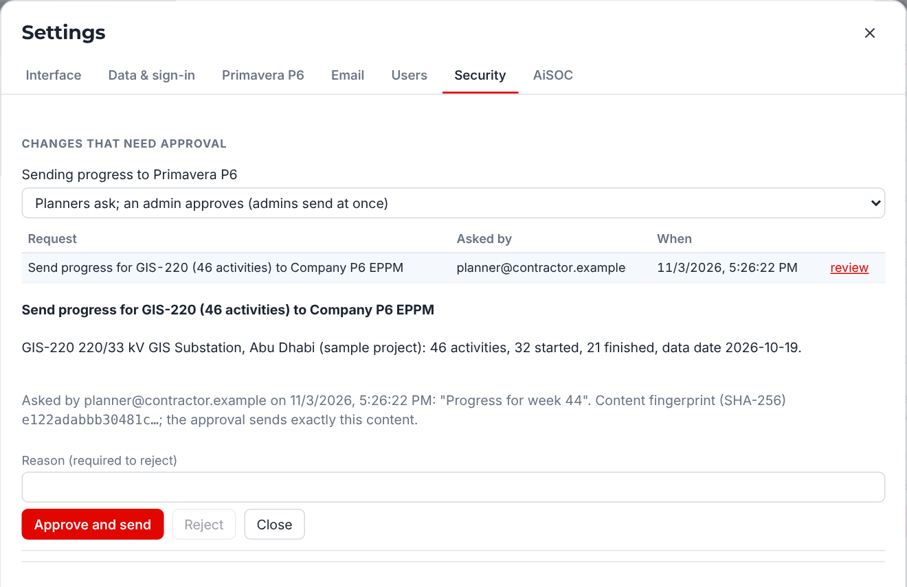
Figure 10-2. A request for an update to P6, ready for review.
The request keeps a fingerprint (SHA-256) of the update. If a person changes the stored update after the request, the server does not approve it. The requester can cancel their own request.
The audit log
The audit log is a list of all sign-ins and all changes on the server. Each entry has the time, the user, the computer address, the action and the details. Passwords are not in the log. The log records only that a password changed.
Each entry contains a fingerprint of the entry before it. Thus a changed entry or a removed entry breaks the chain, and a check of the log finds it. The database also refuses to change the entries.
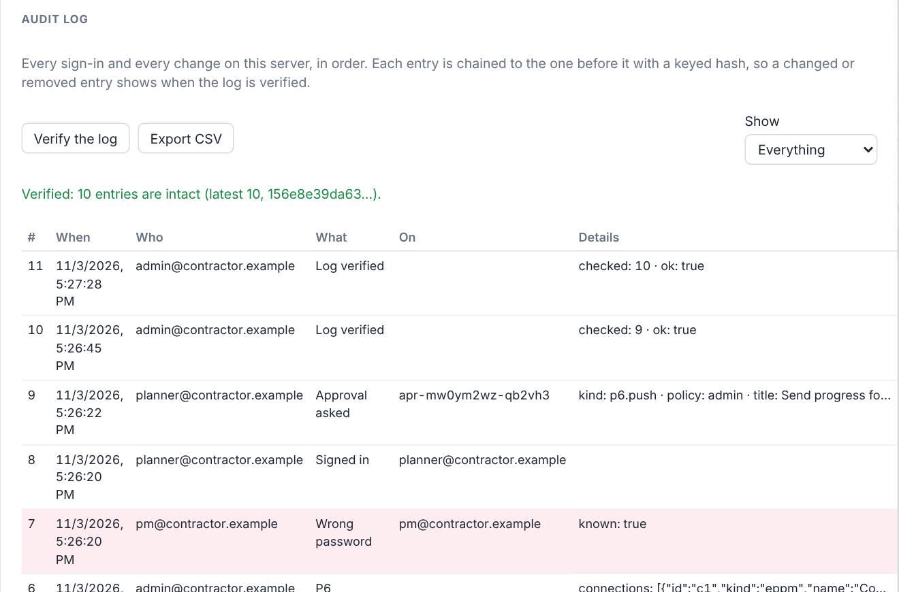
Figure 10-3. The audit log after a check.
To read and check the audit log
Click Settings, then the Security tab.
In Show, select the type of entries, for example Sign-ins.
Click Verify the log.A green line shows that all entries are correct. A red line shows the first entry that is not correct.
To give the log to an auditor, click Export CSV.
If the check shows a red line, do not change the database. Tell your security team. Keep a copy of the database and of the server log for the investigation.
Stratum Server also checks the log when it starts and one time each day. It writes the result and the last entry to its own log, outside the database. A chain cannot show that entries were cut from its end. Compare the last entry in the server log with the last entry that Verify the log shows.
To keep the log for a limited time
On the Security tab, go to Keep audit entries.
Select the period, for example 2 years.Each day, the server removes the entries that are older than the period.
Before it removes entries, the server writes a checkpoint. The checkpoint records how many entries went and the fingerprint of the last one. Thus the check of the log continues to work after the removal.
Connect to AiSOC
AiSOC is an open-source security operations center that you install on your own server. Stratum Server can send its audit events to AiSOC. Then your security team sees Stratum with the other systems of the company. AiSOC is a separate project, and Miqyas Labs is not related to it.
Figure 10-4. Stratum Server sends its audit events to AiSOC.
By default, Stratum sends only the security events. These are sign-ins, locks, changes to users and settings, approvals, updates to P6, and the checks of the audit log. Each event has a severity. For example, a locked sign-in is high, and a broken audit log is critical.
To install AiSOC
It is necessary to have a server with Docker, 8 GB of memory and 20 GB of free disk. Your IT team can do these steps.
On the server, type git clone https://github.com/beenuar/AiSOC.
Type cd AiSOC, then make up.AiSOC starts. It shows the address of the console and the administrator password.
In the AiSOC console, add a connector for Stratum. Click Reveal push URL.AiSOC shows the push token.
To connect Stratum Server to AiSOC
Click Settings, then the AiSOC tab.
Type the address of the AiSOC console, for example https://aisoc.company.local:3000.
Type the ingest address, for example https://aisoc.company.local:8081.
Type the push token and the tenant ID from AiSOC.
Select Send Stratum audit events to AiSOC.
Click Save.
Click Send a test event.A green line shows that AiSOC accepted the event.
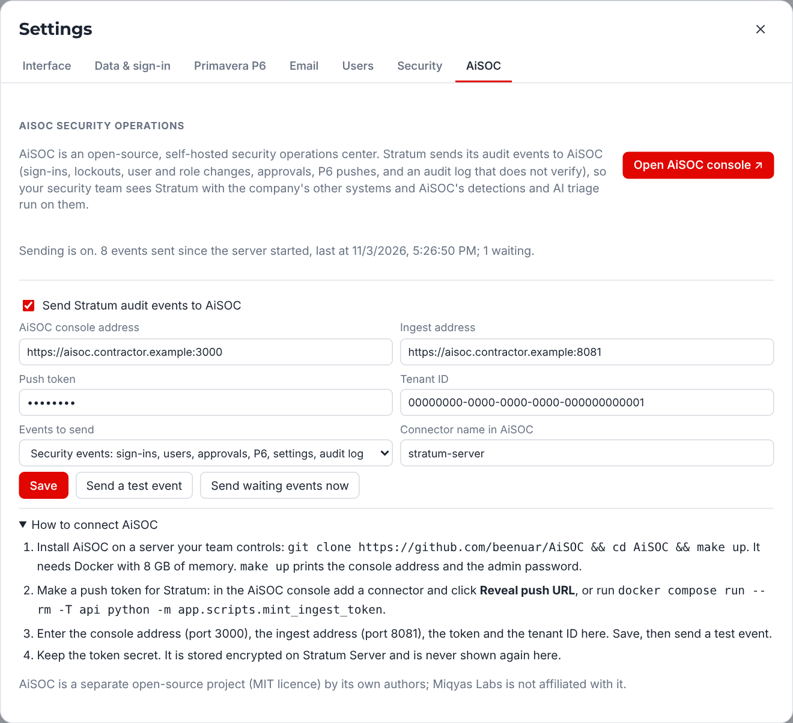
Figure 10-5. The AiSOC tab.
To open the AiSOC console
Click Settings, then the AiSOC tab.
Click Open AiSOC console.The AiSOC console opens in a new tab.
Sign in with your AiSOC account.
If AiSOC is not available, Stratum keeps the events and sends them again later. The AiSOC tab shows the number of events that wait and the last error. To send them at once, click Send waiting events now.
Keep the push token secret. Stratum Server keeps it encrypted and does not show it again. If you think that a different person has the token, make a new token in AiSOC and type it here.
Related: Chapter 3 (connect to a Stratum Server), Chapter 5 (update the progress), Chapter 9 (AI assistants), Chapter 11 (problems and solutions).
11Troubleshooting, shortcuts and glossary
This chapter gives solutions to frequent problems, the keyboard shortcuts, and the definitions of the terms in this manual.
Troubleshooting
Problem
Possible cause
Solution
Stratum 4D cannot open a Microsoft Project file.
The file is an .mpp file.
In Microsoft Project, save the file as XML. Then import the XML file.
The dates are different from the dates in P6.
The schedule options are different.
Click Project › Schedule…, then Options…. Set the same options as in P6. Read the log with View Log.
Stratum 4D does not save, and shows Save as new.
A different person saved the project after you opened it.
Click Save as new. Then compare the two versions.
A widget shows Needs a baseline.
A prerequisite of the dashboard is not complete.
Read the bar at the top of the dashboard. Do the step that it shows, for example assign a baseline.
A scheduled email was not sent.
The desktop application was closed, or the mail server is not set.
Start the desktop application. Set the mail server in Settings › Email. Look at the result of the last send on the schedule.
Elements of the model do not show during the simulation.
The elements have no link to an activity.
On the Display tab, look at Unlinked elements. Link them with a rule or by hand.
ExplodeBy storey does not move the model.
The elements have no Storey property.
Select From centre, or add the Storey property to the IFC model.
Split Task does not split the task.
You clicked near an end of the bar, or in its completed part.
Click inside the bar, away from its ends and after its progress.
A section plane removes almost all of the model.
The position is a fraction of the full height, and the model has deep foundations.
Move the slider, or click ⇄ to keep the other side.
The exported video is slower or shorter than the animation.
The computer cannot draw the frames at the frame rate.
Use a lower resolution or frame rate. Or export a series of images and join them with a video editor.
The assistant does not show the Stratum tools.
The configuration is incorrect, or the assistant application did not start again.
Do a check of the path in the configuration. Make sure that Node.js 20 or newer is installed. Start the assistant application again.
The MCP server cannot open the database.
sql-wasm.wasm is not in the folder of stratum-mcp.cjs, or the path is incorrect.
Put the two files in the same folder. To use a different database file, set STRATUM_DB.
The sign-in page shows Too many wrong passwords.
Stratum Server locked the sign-in after incorrect passwords.
Wait for the time on the page. Then sign in with the correct password. If you do not know the password, ask the administrator for a new one.
Stratum 4D shows Your session ended.
An administrator changed your password or your role.
Sign in again.
The status bar shows Sent for approval, and P6 does not change.
The server keeps updates to P6 until an administrator approves them.
Ask an administrator to approve the request in Settings › Security.
Verify the log shows a red line.
A person changed or removed audit entries in the database.
Do not change the database. Tell your security team. Keep a copy of the database and of the server log.
The AiSOC tab shows Cannot reach AiSOC.
The ingest address is incorrect, or AiSOC is stopped.
Do a check of the address and the port (8081). Start AiSOC. Click Send waiting events now.
AiSOC refuses the events (HTTP 401).
The push token is incorrect or old.
Make a new token in AiSOC. Type it on the AiSOC tab and click Save.
The assistant says that a file is outside the folders.
STRATUM_MCP_ROOTS does not include the folder of the file.
Move the file into a permitted folder, or add the folder to STRATUM_MCP_ROOTS.
Keyboard shortcuts
All layouts
Keys
Action
Ctrl+Alt+1
P6 layout
Ctrl+Alt+2
Project layout
Ctrl+Alt+3
4D layout
Ctrl+Alt+4
Reports view
Ctrl+S
Save the project
Ctrl+Z / Ctrl+Y
Undo / redo
P6 layout
Keys
Action
Ctrl+O
Open
Ctrl+P
Print
Ins / Del
Add / delete an activity
Ctrl+L
Link the selected activities
Ctrl+E
Fill down
Ctrl+F
Find
Ctrl+A
Select all
F9
Schedule
F10
Level resources
Project layout
Keys
Action
Shift+F2
Task Information
Ctrl+F2
Link the selected tasks
Ctrl+Shift+F2
Unlink the selected tasks
Alt+Shift+→
Indent
Alt+Shift+←
Outdent
Alt+F10
Assign Resources
F2, Enter, Tab
Change a cell, then go to the next cell
4D layout
Keys
Action
Space
Play or pause the simulation
Ctrl+Shift+A
Link the selected elements to the selected activity
Del
In the animation editor: remove the selected key
Glossary
Term
Meaning
Activity
One item of work in the schedule. Microsoft Project calls it a task.
AiSOC
An open-source security operations center. Stratum Server can send its audit events to it.
Approval
The decision of an administrator to let an update go to P6
Audit log
The list of all sign-ins and changes on a Stratum Server. Each entry contains a fingerprint of the entry before it.
Appearance profile
The colors and visibility of an element before, during and after its activity
Baseline
A copy of the schedule at one time. You compare the current schedule with it.
BEI
Baseline Execution Index. The number of activities that finished, divided by the number that had to finish by the data date.
Critical activity
An activity that has no total float, or less float than the limit in the schedule options. A delay to it delays the project finish.
Data date
The date of the progress. Work before it is actual, and work after it is forecast.
DCMA 14-point check
A set of 14 checks of the quality of a schedule, from the US Defense Contract Management Agency
Element
One object of the 3D model, for example a wall or a transformer
Fingerprint (SHA-256)
A short code that a calculation makes from data. A change to the data gives a different code.
Key (animation)
A record of the camera, the date or the view at one time of an animation
IFC
Industry Foundation Classes. An open file format for building models.
Link (4D)
A connection between an element and an activity
MCP
Model Context Protocol. A standard that lets an AI assistant use tools.
MSPDI
The XML file format of Microsoft Project
Relationship
The logic between two activities: Finish to Start (FS), Start to Start (SS), Finish to Finish (FF) or Start to Finish (SF), with a lag
Planned vs actual
A color mode that compares the progress on the current dates with the progress on the baseline dates
Push token
The secret code that lets Stratum Server send events to AiSOC
Rule (4D)
An instruction that links each element to the activity that has the same value
S-curve
A chart of the cumulative cost, hours or progress against time
Section plane
A plane that cuts the model and removes one side of it
Slicer
A filter on a dashboard. It applies to all the widgets.
SPI / CPI
Schedule and Cost Performance Index. Earned value divided by planned value, and earned value divided by actual cost.
Total float
The time that an activity can slip before it delays the project finish
Viewpoint
A saved view: the date, the camera, the sections and the color mode